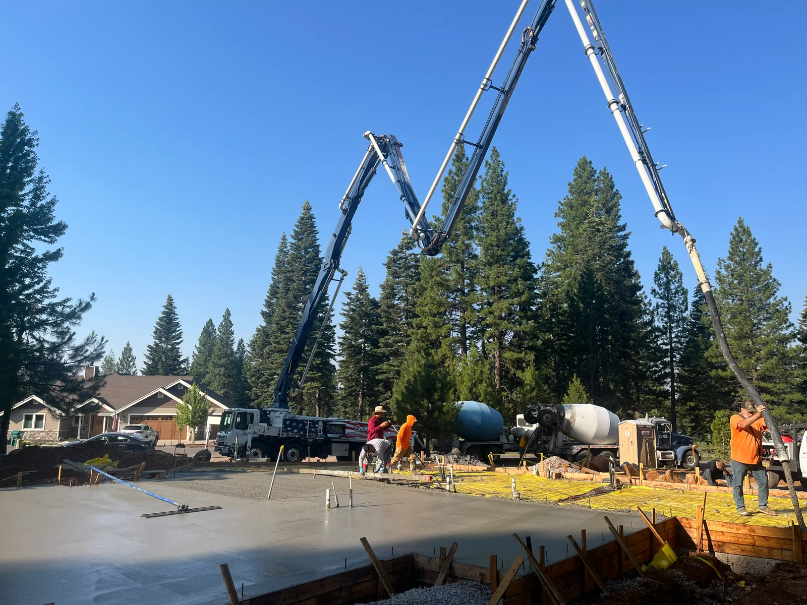

MD Spangler Concrete
Structural Concrete in Redding, CA
MD Spangler Concrete completes engineering-informed structural concrete work in Redding and across Northern California.
Structural work is completed with careful reinforcement, accurate placement, and attention to load-bearing requirements. Mel holds California A (General Engineering) and C-8 (Concrete) classifications under license 598557.

What this work covers
- Careful reinforcement
- Accurate placement
- Attention to load-bearing requirements
Common questions
How do I get a structural concrete quote?
Email your plans to melsconcrete@icloud.com, or call or text 530-917-5727.
What areas do you serve?
MD Spangler Concrete primarily serves Shasta, Tehama, and Butte Counties, including Redding, Anderson, Cottonwood, Red Bluff, Corning, Chico, and Oroville, and Mel’s crew is available for projects throughout Northern California.
Are you licensed?
Yes. California Contractor License 598557, with A (General Engineering) and C-8 (Concrete) classifications, held since 1990.
How soon can you start?
Mel has a full crew ready to work. Most projects can begin quickly depending on scope.